Scale-invariant feature detection identifies keypoints that remain stable across different scales of an image. The Difference of Gaussian (DoG) approximates the Laplacian of Gaussian (LoG) efficiently by subtracting two Gaussian-blurred images at adjacent scales.
Detects blob-like structures by finding zero crossings of the second derivative. Computationally expensive but theoretically optimal for scale-space extrema detection.
Efficient approximation of LoG. Computed by subtracting two Gaussian-blurred images: DoG = G(x,σ·k) − G(x,σ). Uses two octaves with 5 Gaussian images each → 4 DoG images per octave.
Octave 1 uses the raw input image as the base, blurred progressively with σ, σ², σ³, σ⁴ where σ = 2^(1/4). Octave 2 downsamples the last blurred image by 0.5× using nearest-neighbor interpolation.
A keypoint is detected if a pixel is strictly greater or less than all 26 neighbors in a 3×3×3 neighborhood across adjacent DoG scales, and its absolute value exceeds the threshold.
8 DoG images across 2 octaves. Each image represents the difference between adjacent Gaussian-blurred versions of the input.
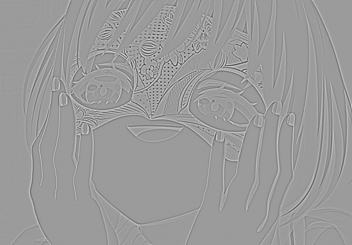
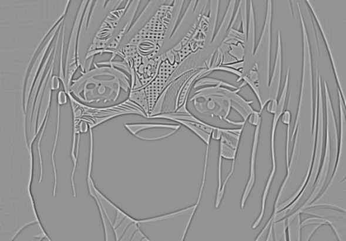
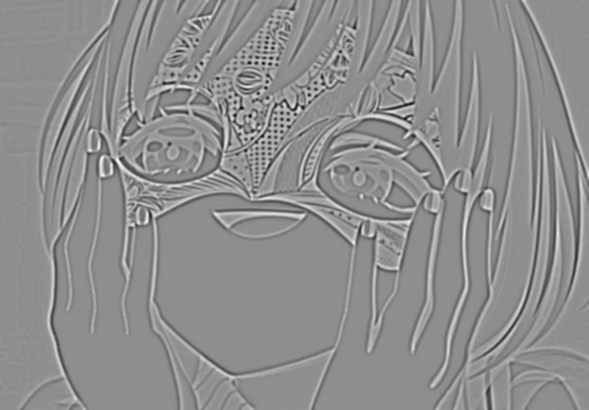
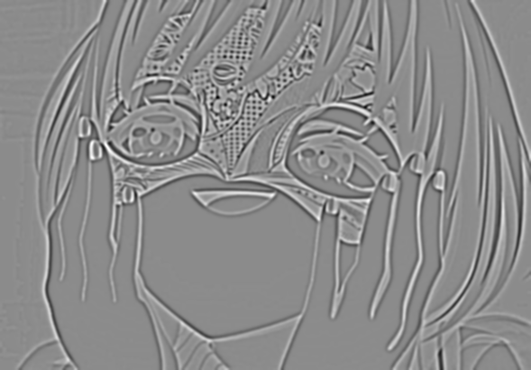
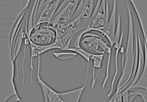
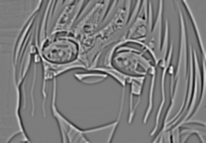
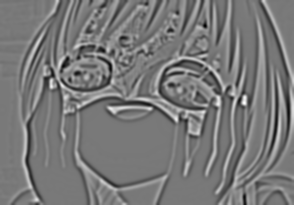
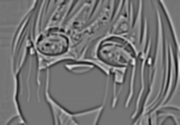
Higher thresholds filter out weak responses, retaining only the most salient keypoints. Lower thresholds detect more features but include noise and false positives.
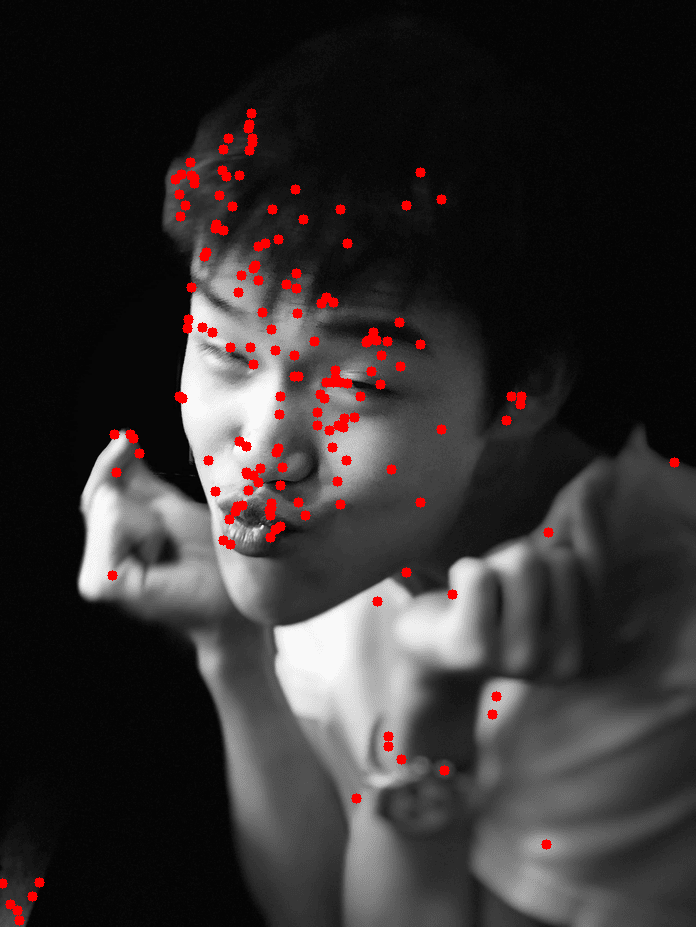
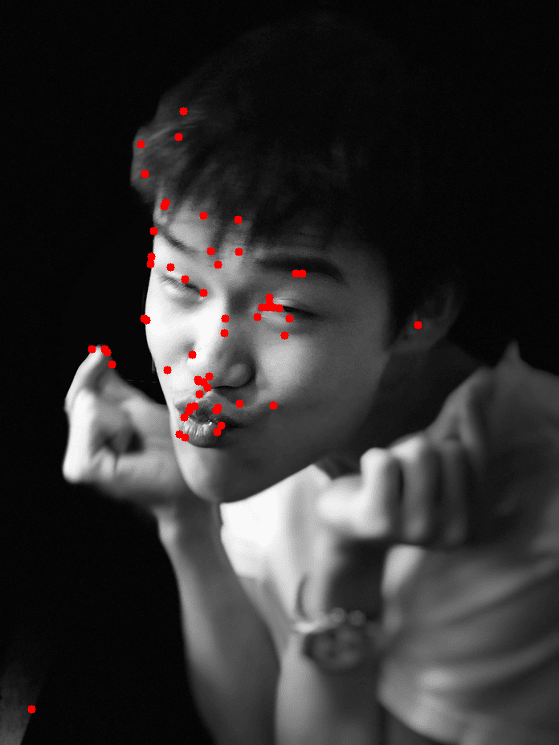
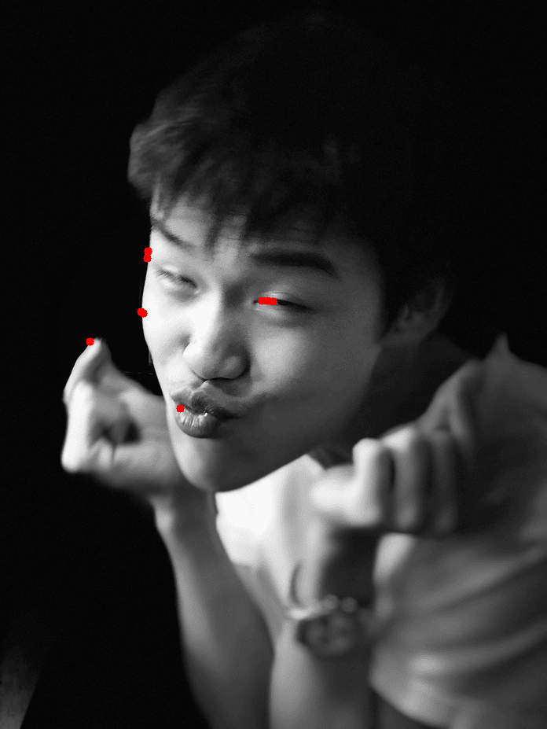
The bilateral filter smooths images while preserving edges by combining a spatial Gaussian kernel with a range kernel based on intensity differences. The Joint Bilateral Filter (JBF) decouples the guidance signal, allowing a separate grayscale image to control edge preservation.
Gaussian based on pixel distance. Window size = 6σ_s + 1. Precomputed as a 2D LUT before filtering — reused for every pixel, eliminating redundant exp() calls.
Gaussian based on intensity difference in guidance image T, normalized to [0,1]. For grayscale guidance: scalar diff. For color guidance: Euclidean distance in RGB space.
6 candidate grayscale images are generated from weighted combinations of R, G, B channels plus cv2 standard. The one minimizing L1 cost between JBF output and original is selected as optimal.
All pixel-level operations replaced with NumPy array shifts. Only W×W kernel offset loops remain. Achieves ~0.24 sec — faster than the reference 0.26 sec on AMD Ryzen 9 7950X.
L1-norm between JBF output and original RGB image. Lower cost = better edge preservation.
| Grayscale Setting | Cost |
|---|---|
| R×0.8 + G×0.2 + B×0.0 | 2,480,017 ★ |
| cv2.COLOR_BGR2GRAY | 2,522,821 |
| R×0.1 + G×0.4 + B×0.5 | 2,584,439 |
| R×0.0 + G×1.0 + B×0.0 | 2,598,167 |
| R×0.1 + G×0.0 + B×0.9 | 2,685,522 |
| R×0.0 + G×0.0 + B×1.0 | 2,719,330 ✗ |
| Grayscale Setting | Cost |
|---|---|
| R×0.1 + G×0.0 + B×0.9 | 596,105 ★ |
| R×0.2 + G×0.0 + B×0.8 | 600,574 |
| R×1.0 + G×0.0 + B×0.0 | 614,089 |
| R×0.4 + G×0.0 + B×0.6 | 632,100 |
| cv2.COLOR_BGR2GRAY | 676,556 |
| R×0.2 + G×0.8 + B×0.0 | 681,602 ✗ |
Comparing original, highest-cost filtered (blue-only guidance), and lowest-cost filtered (red-dominant guidance).
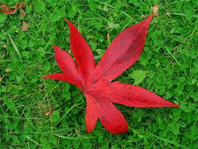
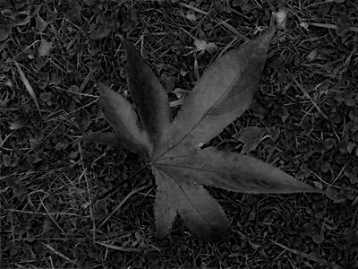
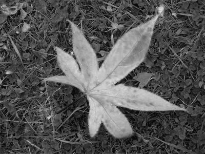
Comparing original, highest-cost filtered (green-dominant guidance), and lowest-cost filtered (blue-dominant guidance).
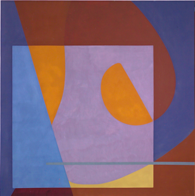
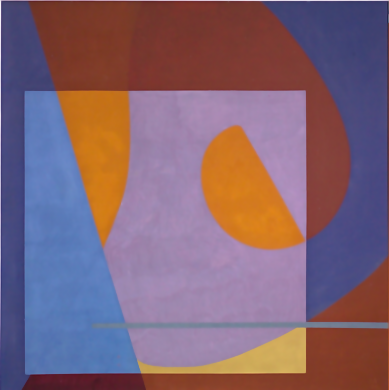
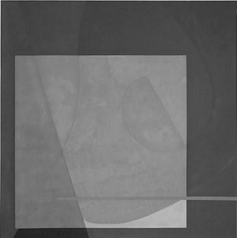
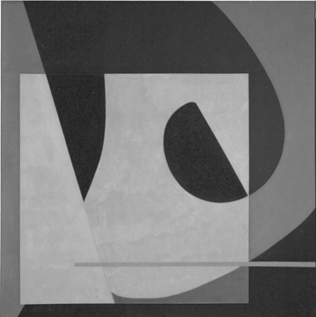